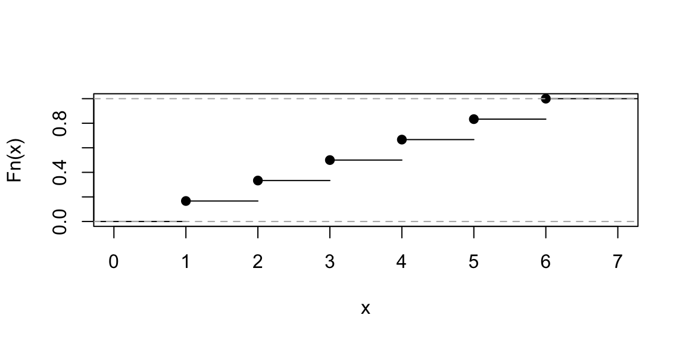
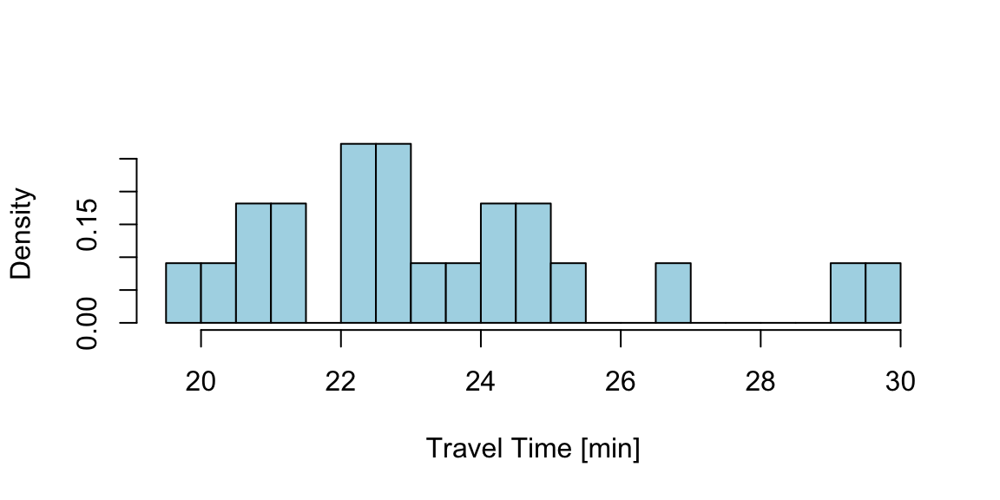

factorial(25)/(factorial(19)*factorial(25-19))## [1] 177100\[ \newcommand{\prob}[1]{\operatorname{P}\left(#1\right)} \newcommand{\Var}[1]{\operatorname{Var}\left(#1\right)} \newcommand{\sd}[1]{\operatorname{sd}\left(#1\right)} \newcommand{\Cor}[1]{\operatorname{Corr}\left(#1\right)} \newcommand{\Cov}[1]{\operatorname{Cov}\left(#1\right)} \newcommand{\E}[1]{\operatorname{E}\left(#1\right)} \newcommand{\defeq}{\overset{\text{\tiny def}}{=}} \DeclareMathOperator*{\argmax}{arg\,max} \DeclareMathOperator*{\argmin}{arg\,min} \DeclareMathOperator*{\mini}{minimize} \]
“It is remarkable that a science which began with the consideration of games of chance should have become the most important object of human knowledge…” Pierre Simon Laplace
Probability deals with randomness. The art of data science is being able to “separate” signal from noise. For example, we need to account for randomness in human behavior. A random phenomena, by its very nature, means a precise prediction of an outcome has to be described by a distribution. Surprisingly random events typically have statistical regularity in many ways. For example, if we flip a coin, it would be hard to predict the outcome (head or tail) on an individual flip, but if we flip a coin many times and count the proportion of heads, the average will converge to something close to \(1/2\). This is called the law of large numbers.
Probability is a language that lets you communicate information about uncertain outcomes and events. By assigning a numeric value between zero and one to an event, or a collection of outcomes, in its simplest form, probability measures how likely an event is to occur.
Our goal here is to introduce you to the concepts of probability, conditional probability and their governing rules. The crowning being bayes rule for updating conditional probabilities. Understanding these concepts serves as a basis for more complex data analysis and machine learning algorithms. Building probabilistic models has many challenges and real world application. You are about to learn about practical examples from fields as diverse as medical diagnosis, chess games to racetrack odds.
We start by defining probabilities of a finite number of events. An axiomatic approach was proposed by Kolmogorov. This approach is very powerful and allows us to derive many important results and rules for calculating probabilities. Furthermore, in this chapter, we will discuss the notion of conditional probability and independence as well as tools for summarizing the distribution of a random variable, namely expectation and variance.
The study of probability arose in part due to interest in understanding games of chance, like cards or dice. These games provide useful examples of many statistical concepts, because when we repeat these games the likelihood of different outcomes remains (mostly) the same (statistical regularity). The first rigorous treatment of probability was presented by Jakob Bernoulli in his paper “Ars Conjectandi” (art of guesses) where he claims that to makes a guess is the same thing as to measure a probability.
Bernoulli considered the following problem. Suppose that we observe \(m\) successes and \(n\) failures of an event \(A\), out of total \(N=m+n\) trials. How do we assign a probability \(P(A)\) to the event \(A\)? A classic definition of the probability (due to Jakob Bernoulli) is the ratio of number of favorable outcomes \(m\) to the total number of outcomes \(N\), which is the sum of \(m\) and the number of unfavorable outcomes \(n\) \[ P = \dfrac{m}{m+n} = \dfrac{m}{N}. \]
Moreover, can we can we construct a law of succession? What is the probability that the next trial is to be success, given that there are uncertainties in the underlying probabilities. Keynes (1921) considered the rule of succession a.k.a. induction. For example, Bernoulli proposed that \[ P_{N+1} = \dfrac{m+1}{N+2}. \] Keynes (1921) (p. 371) provided a fully Bayesian model based on what we know today as Beta-Binomial model. sec-bl provides a full analysis. The determination of the predictive rule is equivalent to the problem of finding a sufficient statistics (a.k.a. summary statistic) and performing feature engineering in modern day artificial intelligence applications.
de Finetti puts this in the framework of exchangeable random variables, see Kreps (1988) for further discussion. Jeffreys provides an alternative approach based on the principle of indifference. \[ P_{N+1} = \dfrac{m+1/2}{N+1}. \] Ramsey (1926) and de Finetti (1937) and Savage (1956) use a purely axiomatic approach in an effort to operationalize probability. In a famous quote de Finetti says “the probability does not exist”. In this framework, probability is subjective and operationalize as a willingness to bet. If a gambit \(A\) pays $1 if it happens and $0 otherwise, then the willingness to bet 50 cents to enter the gamble implies the subjective probability of \(A\) is 0.5. Contrary to the frequentist approach, the probability is not a property of the event, but a property of the person. This is the basis of the Bayesian approach to probability.
Leonard Jimmie Savage, an American statistician, developed a decision theory framework known as the “Savage axioms” or the “Sure-Thing Principle.” This framework is a set of axioms that describe how a rational decision-maker should behave in the face of uncertainty. These axioms provide a foundation for subjective expected utility theory.
The Savage axioms consist of three main principles:
Savage’s axioms provide a basis for the development of subjective expected utility theory. In this theory, decision-makers are assumed to assign subjective probabilities to different outcomes and evaluate acts based on the expected utility, which is a combination of the utility of outcomes and the subjective probabilities assigned to those outcomes.
Savage’s framework has been influential in shaping the understanding of decision-making under uncertainty. It allows for a more flexible approach to decision theory that accommodates subjective beliefs and preferences. However, it’s worth noting that different decision theorists may have alternative frameworks, and there are ongoing debates about the appropriateness of various assumptions in modeling decision-making.
Frequency probability is based on the idea that the probability of an event can be found by repeating the experiment many times and probability arises from from some random process on the sample space (such as random selection). For example, if we toss a coin many times, the probability of getting a head is the number of heads divided by the total number of tosses. This is the basis of the frequentist approach to probability.
Another way, sometimes more convenient, to talk about uncertainty and to express probabilities is odds, such as 9 to 2 or 3 to 1. We assign odds “on \(A\)” or “against \(A\)’’. For example, when we say that the odds on a Chicago Bear’s Super Bowl win are 2 to 9, it means that if they are to play 11 times (9+2), they will win 2 times. If \(A\) is the win event, then odds on \(A\) \[ O(A) = \dfrac{P(A)}{P(\mbox{not A}) } \] Equivalently, probabilities can be determined from odds \[ P(A) = \dfrac{1}{1+O(A)} \] For example if the odds are one, then \(O(A) = 1\) and for every $1 bet you will payout $1. This event has probability \(0.5\)
If \(O(A) = 2\), then you are willing to offer \(2:1\). For a $1 bet you’ll payback $3. In terms of probability \(P = 1/3\).
Odds are primarily used in betting markets. For example, let’s re-analyze the 2016 election in the US.
Example 1.1 (Odds) One of the main sources of prediction markets are bookmakers who take bets on outcomes of events (mostly sporting) at agreed upon odds. Figure fig-odds shows the odds used by several bookmakers to take bets on the winner of the US presidential election in 2016. At that time the market was predicting that Hilary Clinton would win Donald Trump, the second favorite, with odds 7/3. The table is generated by the Oddschecker website.
Ahead of time we can assign probabilities of winning to each candidate. According to the bookmakers’ odds the candidate with highest chance to win is Hilary Clinton. The best odds on Clinton are \(1/3\), this means that you have to risk $3 to win $1 offered by Matchbook. Odds dynamically change as new information arrives. There is also competition between the Bookmakers and the market is adapting to provide the best possible odds. Ladbrokes is the largest UK bookie and Betfair is an online exchange. A bookmaker sets their odds trying to get equal public action on both sides , otherwise they are risking to stay out of business.
Example 1.2 (Kentucky Derby) The Kentucky Derby happens once a year – first Saturday in May. In horse racing the odds are set by the betting public. The racetrack collects all the bets, takes a fee (18%), and then redistributes the pool to the winning tickets. The race is \(1 \frac{1}{4}\) (2 kilometers) race and is the first time the three-year old horses have raced the distance.
There was a long period where favorites rarely won. Only six favorites have won in the 36 year period from 1979 to 2013. Recently favorites have one many times in a row. The market is getting better at predicting whose going to win. Here’s the data
Recently, favorites have had a lot more success
The most famous favorite to win is Secretariat (1973) who won with odds 3/2 in a record time of 1 minute 59 and 2/5 seconds. Monarchos was the only one other horse that in 2005 has broken two minutes at odds 11.5/1.
Example 1.3 (Boy-Girl Paradox) If a woman has two children and one is a girl, the chance that the other child is also female has to be \(50-50\), right? But it’s not. Let’s list the possibilities of girl-girl, girl-boy and boy-girl. So the chance that both children are girls is 33 percent. Once we are told that one child is female, this extra information constrains the odds. (Even weirder, and I’m still not sure I believe this, the author demonstrates that the odds change again if we’re told that one of the girls is named Florida.) In terms of conditional probability, the four possible combinations are \[ BB \; \; BG \; \; GB \; \; GG \] Conditional on the information that one is a girl means that you know we can’t have the \(BB\) scenario. Hence we are left with three possibilities \[ BG \; \; GB \; \; GG \] In one \(1\) of these is the other a girl. Hence \(1/3\).
It’s a different question if we say that the first child is a girl. Then the probability that the other is a girl is \(1/2\) as there are two possibilities \[ GB \; \; GG \] This leads to the probability of \(1/2\).
Example 1.4 (Galton Paradox) You flip three fair coins. What is the \(P(\text{all} \; \text{alike})\)?
Assuming a fair coin (i.e. \(p(H) = p(T) = 1/2\)), a formal approach might consist of computing the probability for all heads or all tails, which is \[\begin{align*} p(HHH) &\equiv p(H \text{ and } H \text{ and } H) \\ &= p(H)\times p(H)\times p(H) \\ &= \left(\frac{1}{2}\right)^3 \end{align*}\] and, since we’re ultimately interested in the probability of either (mutually exclusive) case, \[\begin{align*} P(\text{all alike}) &= P(HHH \text{ or } TTT) \\ &= P(HHH) + P(TTT) \\ &= 2 \times \frac{1}{8} \end{align*}\]
One could arrive at the same conclusion by enumerating the entire sample space and counting the events. Now, what about a simpler argument like the following. In a run of three coin flips, two coins will always share the same result, so the probability that the “remaining/last” coin matches the other two is 1/2; thus, \[ p(\text{all alike}) = 1/2 \] The fault lies somewhere within the terms the and/or “remaining/last” and their connotation. A faulty symmetry assumption is being made in that statement pertaining to the distribution of the “remaining/last” coin. Loosely put, you’re certain to ultimately be in the case where at least two are alike, as stated in the above argument, but within each case the probability of landing the “remaining/last” matching \(H\) or \(T\) is not \(1/2\), due to the variety of ways you can arrive at two matching coins.
For a real treatment of the subject, we highly recommend reading Galton’s essay at galton.org.
Example 1.5 (Three Cards) Suppose that you have three cards: one red/red, one red/blue and one blue/blue. You randomly draw a card and place it face down on a table and then you reveal the top side. You see that its red. What’s the probability the other side is red? \(1/2\)? No, its \(2/3\)! By a similar logic there are six initial possibilities \[ B_1 B_2 \; \; B_2 B_1 \; \; B R \; \; R B \; \; R_1 R_2 \; \; R_2 R_1 \] where \(1\) and \(2\) index the sides of the same colored cards.
If we now condition on the top side being red we see that there are still three possibilities left \[ R B \; \; R_1 R_2 \; \; R_2 R_1 \] Hence the probability is \(2/3\) and not the intuitive \(1/2\).
Example 1.6 (New England Patriots) Let’s consider another example and calculate the probability of winning 19 coin tosses out of 25. The New England Patriots won 19 out of 25 coin tosses in 2014-15 season. What is the probability of this happening?
Let \(X\) be a random variable equal to \(1\) if the Patriots win and \(0\) otherwise. It’s reasonable to assume \(P(X = 1) = \frac{1}{2}\). The probability of observing the sequence in which there is 1 on the first 19 positions and 0 afterwards is \((1/2)^{25}\). We can code a typical sequence as, \[ 1,1,1,\ldots,1,0,0,\ldots,0. \] There are \(177,100\) different sequences of 25 games where the Patriots win 19. There are \(25! = 1\cdot 2\cdot \ldots \cdot 25\) ways to re-arrange this sequence of zeroes and ones. Further, all zeroes and ones are interchangeable and there are \(19!\) ways to re-arrange the ones and \(6!\) ways to rearrange the sequence on zeroes. Thus, the total number of of different winning sequences is
factorial(25)/(factorial(19)*factorial(25-19))## [1] 177100Each potential sequence has probability \(0.5^{25}\), thus
\[
P\left(\text{Patriots win 19 out 25 tosses}\right) = 177,100 \times 0.5^{25} = 0.005
\]
Often, it is easier to communicate uncertainties in a form of odds. In terms of betting odds of \(1:1\) gives \(P = \frac{1}{2}\), odds on \(2:1\) (I give \(2\) for each \(1\) you bet) is \(P = \frac{1}{3}\).
Remember, odds, \(O(A)\), is the ratio of the probability of not happening over happening, \[ O(A) = (1 - P(A)) / P(A), \] equivalently, \[ P(A) = \frac{1}{1 + O(A)}. \]
The odds of patriot winning sequence in then 1 to 199
(1-0.005)/0.005## [1] 199Example 1.7 (Hitting Streak) Pete Rose of the Cincinnati Reds set a National League record of hitting safely in \(44\) consecutive games. How likely a such a long sequence of safe hits is to be observed? If you were a bookmaker, what odds would you offer on such an event? This means that he safely reached first base after hitting the ball into fair territory, without the benefit of an error or a fielder’s choice at least once at every of those 44 games. Here are a couple of facts we know about him:
Assuming he comes to bat \(4\) times each game, what probability might reasonably be associated with that hitting streak? First we define notation. We use \(A_i\) to denote an event of hitting safely at game \(i\), then \[ \begin{aligned} & P( \mathrm{Rose \; Hits \; Safely \; in \;44 \; consecutive \; games} ) = \\ & P ( A_1 \; \text{and} \; A_2 \ldots \text{and} \; A_{44} ) = P ( A_1 ) P ( A_2 ) \ldots P ( A_{44} ) \end{aligned} \] We now need to find \(P(A_i)\text{s}\) where \(P (A_i ) = 1 - P ( \text{not} \; A_i )\) \[\begin{align*} P ( A_1 ) & = 1 - P ( \mathrm{ not} \; A_1 ) \\ & = 1 - P ( \mathrm{ Rose \; makes \; 4 \; outs } ) \\ & = 1 - ( 0.7)^4 = 0.76 \end{align*}\] For the winning streak, then we have \((0.76)^{44} = 0.0000057\), a very low probability. In terms of odds, there are three basic inferences
Example 1.8 (Derek Jeter) Sample averages can have paradoxical behavior. This is related to the field of causation and the property of confounding. Let’s compare Derek Jeter and David Justice batting averages. In both 1995 and 1996, Justice had a higher batting average than Jeter did. However, when you combine the two seasons, Jeter shows a higher batting average than Justice! This is just a property of averages and a finer subset selection can change your average effects. Drug trials. Care with selection bias.
| 1995 | 1996 | Combined | ||||
|---|---|---|---|---|---|---|
| Derek Jeter | 12/48 | 0.250 | 183/582 | 0.314 | 195/650 | 0.310 |
| David Justice | 104/411 | 0.253 | 454/140 | 0.321 | 149/551 | 0.270 |
This situation is known as confounding. If occurs when two separate and different populations are aggregated to give misleading conclusions. The example shows that if \(A,B,C\) are events it is possible to have the three inequalities \[\begin{align*} &P( A \mid B \text{ and } C ) > P( A \mid B \text{ and } \bar C )\\ &P( A \mid \bar B \text{ and } C ) > P( A \mid \bar B \text{ and } \bar C )\\ &P( A \mid \text{ and } C ) > P( A \text{ and } C ) \end{align*}\] The three inequalities can’t hold simultaneously when \(P(B\mid C) = P(B\mid \bar C)\).
Example 1.9 (Birthday Problem) The birthday problem is a classic problem in probability theory that explores the counterintuitive likelihood of shared birthdays within a group. Surprisingly, in a room of 23 people, the probability of shared birthdays is 50%. With 70 people, the probability is 99.9%.
In general, given \(N\) items (people) randomly distributed into \(c\) categories (birthdays), where the number of items is small compared to the number of categories \(N \ll c\), the probability of no match is given by \[ P(\text{no match}) \approx \exp\left(-N^2/2c\right). \] Given \(A_i\) is the event that person \(i\) has a matching birthday with someone, we have \[ P(\text{no match}) = \prod_{i=1}^{N-1}(1-P(A_i)) = \exp\left(\sum_{i=1}^{N-1}\log (1-P(A_i))\right). \] Here \(P(A_i) =\dfrac{i}{c}\) Then use the approximation \(\log(1-x) \approx -x\) for small \(x\) to get \(P(\text{no match})\). \[ \sum_{i=1}^{N-1}\log (1-P(A_i)) \approx -\sum_{i=1}^{N-1}\dfrac{i}{c} = -\dfrac{N(N-1)}{2c}. \]
The probability of at least two people sharing a birthday is then the complement of the probability above: \[ P(\text{At least one shared birthday}) = 1 - P(\text{no match}). \] Solving for \(P(\text{match})=1/2\), leads to a square root law \(N=1.2\sqrt{c}\), if \(c=365\) then \(N=23\), and if \(c=121\) (near birthday mathc), then \(N=13\).
This unintuitive nature of this result is a consequence of the fact that there are many potential pairs of people in the group, and the probability of at least one pair sharing a birthday increases quickly as more people are added. The birthday problem is often used to illustrate concepts in probability, combinatorics, and statistical reasoning. It’s a great example of how our intuitions about probabilities can be quite different from the actual mathematical probabilities.
Later, in early thirties of the last century, Kolmogorov made significant contributions to the development of probability. He characterized it as a system of sets that meet specific criteria. The representation of the elements within this set is irrelevant. This is similar to how basic geometric concepts are typically introduced. For example, a circle is defined as the set of all points that are equidistant from a given point. The representation of the circle is irrelevant, as long as the set of points meets the criteria. Similarly, a probability field is defined as a set of events that meet specific criteria. This is the basis of the axiomatic approach to probability theory.
Kolmogorov’s axioms, which provided a rigorous foundation for probability theory. He showed that probability is immensely useful and adheres to only a few basic rules. These axioms provided a set of logical and mathematical rules that describe the properties of probability measures.
Let \(S\) be a collection of elementary events and consider two random events \(A\) and \(B\) that are subsets of \(S\). The three axioms are:
Mutually exclusive means that only one of the events in the sequence can occur. These axioms provided a solid and consistent foundation for probability theory, allowing mathematicians to reason rigorously about uncertainty and randomness. Kolmogorov’s work helped unify and clarify many concepts in probability, and his axioms are now widely accepted as the basis for modern probability theory. His contributions had a profound impact on various fields, including statistics, mathematical physics, and information theory.
Assigning probabilities to events is a challenging problem. Often, the probability will be applied to analyze results of experiments (a.k.a observed data). Consider coin-tossing example. We toss coin twice and the possible outcomes are HH, HT, TH, TT. Say event \(A\) represents a repetition, then it will consists of the first and second outcome of the two coin-toss. Then, to empirically estimate \(P(A)\) we can repeat the two-toss experiment \(n\) times and count \(m\), the number of times \(A\) occurred. When \(N\) is large, \(m/N\) will be close to \(P(A)\). However, if we are to repeat this experiment under different conditions, e.g. when an unbalanced coin is used, our estimate of \(P(A)\) will change as well.
The axioms provide are a number of rules that probabilities must follow. There are several important corollaries, that can help us assigning probabilities to events. Here are some important corollaries that follow from the Kolmogorov axioms:
All of these axioms follow simply from the principle of coherance of the avoidance of dutch book. This incudes the Bayes rule itself (de Finetti, Shimony).
Bayes rule is a fundamental rule of probability that allows us to calculate conditional probabilities. It is a direct consequence of the definition of conditional probability and the normalization axiom. This rule will become central to learning and inference in artificial intelligence.
Bayes rule simply provides a disciplined probability accounting of how this probabilities get updated in light of evidence. A rational agent requires that their subjective probabilities must obey the principle of coherence. Namely in announcing the set of probabilities he cannot undergo a sure loss. Interestingly enough, this is enough to provide a similar framework to the axiomatic approach of Kolmogorov.
These corollaries and principles help in deriving further results and provide additional tools for analyzing and understanding probability and random processes based on the fundamental principles laid out by Kolmogorov. Arguably the most important rule is Bayes rule for conditional probability.
The age of artificial intelligence (AI) has certainly proved that Bayes is a powerful tool. One of the key properties of probabilities is that they are updated as you learn new information. Conditional means given its personal characteristics of the personal situation. Personalization algorithms used by many online services rely on this concept. One can argue that all probabilities are conditional in some way. The process of Bayesian updating is central to how machines learn from observed data. Rational human behavior ought to adhere to Bayes rule, although there is much literature documenting the contrary.
If probabilities are degrees of belief and subjective, where do they come from and what rules must they satisfy? These questions were answered to varying degrees by Ramsey, de Finetti, and Savage. Ramsey and de Finetti, working independently and at roughly the same time, developed the first primitive theories of subjective probability and expected utility, and Savage placed the theories on a more rigorous footing, combining the insights of Ramsey with the expected utility theory of von Neumann and Morgenstern.
The starting point for Ramsey’s and de Finetti’s theories is the measurement of one’s subjective probabilities using betting odds, which have been used for centuries to gauge the uncertainty over an event. As noted by de Finetti, “It is a question of simply making mathematically precise the trivial and obvious idea that the degree of probability attributed by an individual to a given event is revealed by the conditions under which he would be disposed to bet on that event” (p. 101). Notice the difference between the frequentist and Bayesian approach. Instead of defining the probabilities via an infinite repeated experiment, the Bayesian approach elicits probabilities from an individual’s observed behavior.
Formally, for any event \(A\), the identity \[ P(A) =\frac{1}{1+\text{odds}(A)}\mathrm{or}\;\;\text{odds}(A)=\frac{1-P(A)}{P(A)}\text{,} \] where \(\bar A\) is the complement of \(A\), links odds and probabilities. Throughout, we use \(P\) as a generic term to denote probabilities, when there is no specific reference to an underlying distribution or density. If a horse in a race has odds of 2, commonly expressed as 2:1 (read two to one), then the probability the horse wins is \(1/3\). The basic idea of using betting odds to elicit probabilities is simple and intuitive: ask an individual to place odds over various mutually exclusive events, and use these odds to calculate the probabilities. Odds are fair if lower odds would induce a person to take the bet and higher odds would induce the person to take the other side of the bet.
In constructing a collection of betting odds over various events, de Finetti and Ramsey argued that not all odds are rational (i.e., consistent or coherent). For example, the sum of the probability of each horse winning a race cannot be greater than one. If a person has inconsistent beliefs, then he “could have a book made against him by a cunning bettor and would then stand to lose in any event” (Ramsey (1931), p. 22). This situation is called a Dutch book arbitrage, and a rational theory of probability should rule out such inconsistencies. By avoiding Dutch books, Ramsey and de Finetti showed that the degrees of beliefs elicited from coherent odds satisfy the standard axioms of probability theory, such as the restriction that probabilities are between zero and one, finite additivity, and the laws of conditional. The converse also holds: probabilities satisfying the standard axioms generate odds excluding Dutch-book arbitrages. Absence of arbitrage is natural in finance and economics and is a primary assumption for many foundational results in asset pricing. In fact, the derivations given below have a similar flavor to those used to prove the existence of a state price density assuming discrete states.
Dutch-book arguments are simple to explain. To start, they require an individual to post odds over events. A bettor or bookie can then post stakes or make bets at those odds with a given payoff, \(S\). The choice of the stakes is up to the bettor. A Dutch book occurs when a cunning bettor makes money for sure by placing carefully chosen stakes at the given odds. Alternatively, one can view the odds as prices of lottery tickets that pay off $1 when the event occurs, and the stakes as the number of tickets bought. Thus, probabilities are essentially lottery ticket prices. In fact, de Finetti used the notation ‘Pr’ to refer to both prices and probabilities.
To derive the rules, consider the first axiom of probability: for any event \(A\), \(0\leq P(A) \leq 1\). Suppose that the odds imply probabilities \(P(A)\) for \(A\) occurring and \(P(\bar A)\) for other outcomes, with associated payoffs of \(S_{A}\) and \(S_{\bar A}\). Then, having bet \(S_{A}\) and \(S_{\bar A}\), the gains if \(A\) or \(\bar A\) occur, \(G_{A}\) and \(G_{\bar A}\), respectively, are \[\begin{align*} G(A) & =S_{A}-\text{$P$}(A) S_{A}-\text{$P$}(\bar A) S_{\bar A}\\ G(\bar A) & =S_{\bar A}-\text{$P$}(A) S_{A}-\text{$P$}(\bar A) S_{\bar A}\text{.}% \end{align*}\] To see this, note that the bettor receives \(S_{A}\) and pays \(P(A) S_{A}\) for a bet on event \(A\). The bookie can always choose to place a zero stake on \(\bar A\) occurring, which implies that \(G(A) =S_{A}-P(A) S_{A}\) and \(G\left(\bar A\right) =-P(A) S_{A}\). Coherence or the absence of arbitrage implies that you cannot gain or lose in both states, thus \(G(A) G(\bar A) \leq 0\). Substituting, \(\left( 1-P(A) \right) P(A) \geq0\) or \(0\leq P(A) \leq 1\), which is the first axiom of probability. The second axiom is that the set of all possible outcomes has probability \(1\) is similarly straightforward to show.
The third axiom is that probabilities add, that is, for two disjoint events \(A_{1}\) and \(A_{2}\), \(P(A) =P\left( A_{1} \text{ or } A_{2}\right) =P\left( A_{1}\right) +P\left( A_{2}\right)\). Assuming stakes sizes of \(S_{A}\), \(S_{A_{1}},\) and \(S_{A_{2}}\) (and zero stakes on their complements) there are three possible outcomes. If neither \(A_{1}\) nor \(A_{2}\) occur, the gain is \[ G(\bar A) =-\text{$P$}(A) S_{A}% -\text{$P$}\left( A_{1}\right) S_{A_{1}}-\text{$P$}\left( A_{2}\right) S_{A_{2}}. \]
If \(A_{1}\) occurs, \(A\) also occurs, and the gain is \[
G\left( A_{1}\right) =\left( 1-\text{$P$}(A)
\right) S_{A}+\left( 1-\text{$P$}\left( A_{1}\right) \right)
S_{A_{1}}-\text{$P$}\left( A_{2}\right) S_{A_{2}},
\] and finally if \(A_{2}\) occurs, \(A\) also occurs, and \[
G\left( A_{2}\right) =\left( 1-\text{$P$}(A)
\right) S_{A}-\text{$P$}\left( A_{1}\right) S_{A_{1}}+\left( 1-\text{$P$}\left( A_{2}\right) \right) S_{A_{2}}.
\] Arranging these into a matrix equation, \(G=PS\):
\[
\left( \begin{array}
[c]{c}%
G(\bar A) \\
G\left( A_{1}\right) \\
G\left( A_{2}\right)
\end{array}
\right) =\left( \begin{array}
[c]{ccc}%
-P(A) & -P\left( A_{1}\right) &
1-P(A) \\
1-P(A) & 1-P\left( A_{1}\right) &
-P\left( A_{2}\right) \\
1-P(A) & -P\left( A_{1}\right) &
1-P\left( A_{2}\right)
\end{array}
\right) \left( \begin{array}
[c]{c}%
S_{A}\\
S_{A_{1}}\\
S_{A_{2}}%
\end{array}
\right) \text{.}%
\]
The absence of a Dutch book arbitrage implies that there is no set of stakes, \(S_{A}\), \(S_{A_{1}}\), and \(S_{A_{2}}\), such that the winnings in all three events are positive. If the matrix \(P\) is invertible, it is possible to find stakes with positive gains. To rule this, the determinant of \(P\) must be zero, which implies that \(0=-P(A) +P\left(A_{1}\right) +P\left( A_{2}\right)\), or \(P\left(A\right) =P\left( A_{1}\right) +P\left( A_{2}\right)\). The chapter, countably additivity also holds.
The fourth axiom is conditional probability. Consider an event \(B\), with \(P\left( B\right) >0\), an event \(A\) that occurs conditional on \(B\), and the event that both \(A\) and \(B\) occur. The probabilities or prices of these bets are \(P\left( B\right)\), \(P\left( A \mid B\right)\), and \(P\left( A \text{ and } B\right)\). Consider bets with stakes \(S_{A}\), \(S_{A \mid B}\) and \(S_{A \text{ and } B}\), with the understanding that if \(B\) does not occur, the conditional bet on \(A\) is canceled. The payoffs to the events that \(B\) does not occur, \(B\) occurs but not \(A\), and \(A\) and \(B\) occur, are \[ \left( \begin{array} [c]{c}% G\left( \bar B\right) \\ G\left( \bar A \text{ and } B\right) \\ G\left( A \text{ and } B\right) \end{array} \right) =\left( \begin{array} [c]{ccc}% -P\left( B\right) & -P\left( A \text{ and } B\right) & 0\\ 1-P\left( B\right) & -P\left( A \text{ and } B\right) & -P\left( A \mid B\right) \\ 1-P\left( B\right) & 1-P\left( A \text{ and } B\right) & 1-P\left( A \mid B\right) \end{array} \right) \left( \begin{array} [c]{c}% S_{B}\\ S_{A \text{ and } B}\\ S_{A \mid B}% \end{array} \right) \text{.}% \] Similar arguments imply the determinant must be zero, which implies that \[ P\left( A \mid B\right) =\frac{P\left( A \text{ and } B\right) }{P\left( B\right) }, \] which is the law of conditional probability, given \(P(B)>0\), of course, otherwise the conditional probability is not defined, and the \(P\) matrix has determinant 0.
To summarize, probabilities are degrees of belief and are subjective, and if these beliefs are consistent or coherent, they satisfy the rules of probability. Thus, unlike the Kolmogorov system that assumes the laws of probability, the Bayesian approach derives the laws of probability from behavior that avoids certain losses. This is why most Bayesians describe their way of thinking as rational and coherent.
A random variable is a function that maps the outcomes of a random experiment (events) to real numbers. It essentially assigns a numerical value to each outcome in the sample space of a random experiment. In other words, a random variable provides a bridge between the abstract concept of events in a sample space and the concrete calculations involving numerical values and probabilities. Similar to assigning probabilities to events, we can assign respective probabilities to random variables.
For example, consider a random experiment of rolling a die. Here, an event could be “the outcome is an even number”, and the random variable could be the actual number that shows up on the die. The probability of the event “the outcome is an even number” is 0.5, and the probability distribution of the random variable is a list of all numbers from 1 to 6 each with a probability of 1/6.
So, in summary, while events and random variables are distinct concepts, they are closely related through the framework of probability theory, with random variables serving as a key tool for calculating and working with probabilities of events.
Random variables are quantities that we are not certain about. The simplest version of a random variable is a binary yes/no outcome. A random variable that can take a finite or a countable number of values is called discrete random variable. Otherwise, it will be a continuous random variable.
A random variable will describe an uncertain quantity, denoted by \(X\), by attaching a numeric value to the occurrence of an event. Two examples of discrete random variable are
Random variables are constructed by assigning specific values to events such as \(\{X=x\}\) which corresponds to the outcomes where \(X\) equals to a specific number \(x\). Associated with possible outcomes are probabilities, a number between zero and one.
To fix notation, we will use \(\prob{X=x}\) to denote the probability that random variable \(X\) is equal to \(x\). A map from all possible values \(x\) of a discrete random variable \(X\) to probabilities is called a probability mass function \(p(x)\). We will interchangeably use \(\prob{X=x}\) and \(p(x)\). An important property of the probability mass function is that (normalization Kolmogorov axiom) \[ \sum_{x\in S} p(x) = 1. \] Here \(S\) denotes the set of all possible values of random variable \(X\).
Clearly, all probabilities have to be greater than or equal to zero, so that \(p(x)\ge 0\).
For a continuous random variable, the probability distribution is represented by a probability density function (PDF), which indicates the likelihood of the variable falling within a particular range and will discuss it later. In continuous case, we will use \(p(x)\) to denote probability density function. Another way of describing a continuous random variable, is to use cumulative density function \(F(x) = P(X\le x)\). Arguably, a more natural approach.
The Cumulative Distribution Function (CDF) for a discrete random variable is a function that provides the probability that the random variable is less than or equal to a particular value. The CDF is monotonically increasing function (never decreases as \(x\) increases). In other words, if \(a \leq b\), then \(F_X(a) \leq F_X(b)\). The value of the CDF always lies between 0 and 1, inclusive.
Example 1.10 (Discrete CDF) Suppose \(X\) is a discrete random variable that represents the outcome of rolling a six-sided die. The probability mass function (PMF) of \(X\) is:
\[ P(X = x) = \frac{1}{6} \] for \(x = 1, 2, 3, 4, 5, 6\)
The CDF of \(X\), \(F(x)\), is calculated as follows:
Graphically, the CDF of a discrete random variable is a step function that increases at the value of each possible outcome. It’s flat between these outcomes because a discrete random variable can only take specific, distinct values.
plot(ecdf(1:6), main="")
The formal model of a coin toss was described by Bernoulli. He modeled the notion of probability for a coin toss, now known as the Bernoulli distribution, there \(X \in \{0,1\}\) and \(P(X=1)=p, P(X=0) = 1-p\). Laplace gave us the principle of insufficient reason: where you would list out the possibilities and then place equal probability on each of the outcomes. Essentially the discrete distribution on the set of possible outcomes.
A Bernoulli trial relates to an experiment with the following conditions
The Bernoulli random variable can take on one of two possible outcomes, typically labeled as “success” and “failure.” It is named after the Swiss mathematician Jacob Bernoulli, who introduced it in the 18th century. The distribution is often denoted by \(\text{Bernoulli}(p)\), where \(p\) is the probability of success.
The probability mass function (PMF) of a Bernoulli distribution is defined as follows: \[ P(X = x) = \begin{cases} p & \text{if } x = 1 \\ 1 - p & \text{if } x = 0 \end{cases} \] The expectation (mean) of a Bernoulli distributed random variable \(X\) is given by: \[\E{X} = p \] Simply speaking, if you are to toss a coin many times, you expect \(p\) heads.
The variance of \(X\) is given by: \[ \Var{X} = p(1-p) \]
Example 1.11 (Coin Toss) The quintessential random variable is an outcome of a coin toss. The set of all possible outcomes, known as the sample space, is \(S = \{H,T\}\), and \(p(X = H) = p(X = T) = 1/2\). On the other hand, a single outcome can be an element of many different events. For example, there are four possible outcomes of two coin tosses, HH, TT, HT, TH, which are equally likely with probabilities 1/4. The probability mass function over the number of heads \(X\) out of two coin tosses is
| \(x\) | \(p(x)\) |
|---|---|
| 0 | 1/4 |
| 1 | 1/2 |
| 2 | 1/4 |
Given the probability mass function we can, for example, calculate the probability of at least one head as \(\prob{X \geq 1} = \prob{X =0} + \prob{X =1} = p(0)+p(1) = 3/4\).
The Bernoulli distribution serves as the foundation for more complex distributions, such as the binomial distribution (which models the number of successes in a fixed number of independent Bernoulli trials) and the geometric distribution (which models the number of trials needed to achieve the first success). A Binomial distribution arises from a sequence of Bernoulli trials, and assigns probability to \(X\), which is the number of successes. It’s probability distribution is calculated via: \[ \prob{X=x} = {n \choose x} p^x(1-p)^{n-x}. \] Here \({n \choose x}\) is the combinatorial function, \[ {n \choose x} = \frac{n!}{x!(n-x)!}, \] where \(n!=n(n-1)(n-2)\ldots 2 \cdot 1\) counts the number of ways of getting \(x\) successes in \(n\) trials.
Table below shows the expected value and variance of Binomial random variable.
| Binomial Distribution | Parameters |
|---|---|
| Expected value | \(\mu = \E{X} = n p\) |
| Variance | \(\sigma^2 = \Var{X} = n p ( 1 - p )\) |
For large sample sizes \(n\), this distribution is approximately normal with mean \(np\) and variance of \(np(1-p)\).
Suppose we are about to toss two coins. Let \(X\) denote the number of heads. Then the following table specifies the probability distribution \(p(x)\) for all possible values \(x\) of \(X\). This leads to the following table
| \(x\) | \(\prob{X=x}\) |
|---|---|
| 0 | 1/4 |
| 1 | 1/2 |
| 2 | 1/4 |
Thus, most likely we will see one Head after two tosses. Now, let’s look at a more complex example and introduce our first probability distribution, namely Binomial distribution.
Let \(X\) be the number of heads in three flips. Each possible outcome (“realization”) of \(X\) is an event. Now consider the event of getting only two heads \[ \{ X= 2\} = \{ HHT, HTH, THH \} , \] The probability distribution of \(X\) is Binomial with parameters \(n = 3, p= 1/2\), where \(n\) denotes the sample size (a.k.a. number of trials) and \(p\) is the probability of heads, we have a fair coin. The notation is \(X \sim \mathrm{Bin} \left ( n = 3 , p = \frac{1}{2} \right )\) where the sign \(\sim\) is read as distributed as.
| Result | \(X\) | \(\prob{X=x}\) |
|---|---|---|
| HHH | 3 | \(p^3\) |
| HHT | 2 | \(p^2 ( 1- p)\) |
| HTH | 2 | \(p^2 ( 1 - p)\) |
| THH | 2 | \((1-p)p^2\) |
| HTT | 1 | \(p( 1-p)^2\) |
| THT | 1 | \(p ( 1-p)^2\) |
| TTH | 1 | \((1-p)^2 p\) |
| TTT | 0 | \((1-p)^3\) |
If we want to build a probabilistic model of a stock price or return. We need to use a continuous random variable that can take an interval of values. Instead of frequency function we will use density function, \(p(x)\) to describe a continuous variable. Unlike the discrete case \(p(x)\) is not the probability that random variable takes value \(x\). Rather, we need to talk about value being inside an interval. For example probability of \(X\) with density \(p(x)\) being inside any interval \([a,b]\), with \(a<b\) is given by \[ P(a < X < b) = \int_{a}^{b}p(x)dx. \] The total probability is one as \(\int_{-\infty}^\infty p(x) dx=1\). The simplest continuous random variable is the uniform. A uniform distribution describes a variable which takes on any value as likely as any other. For example, if you are asked about what would be the temperature in Chicago on July 4 of next year, you might say anywhere between 20 and 30 C. The density function of the corresponding uniform distribution is then \[ p(x) = \begin{cases} 1, ~~~20 \le x \le 30\\0, ~~~\mbox{otherwise}\end{cases} \]
Under, this model, then the probability of temperature being between 25 and 27 degrees is \[ P(25 \le x \le 27) = \int_{25}^{27} p(x)dx = (27-25)/10 = 0.2 \]

The Cumulative Distribution Function for a continuous random variable (X), denoted as (F_X(x)), is defined similarly to discrete RV CDF as \[ F(x) = P(X \leq x) \] Continuous RV CDF has the same properties as a discrete one (increasing and takes values in [0,1]).
Example 1.12 (Continuous CDF for Uniform Distribution) \[ \begin{cases} 1 & \text{if } 0 \leq x \leq 1 \\ 0 & \text{otherwise} \end{cases} \]
The CDF, \(F(x)\), is obtained by integrating the PDF: - For \(x < 0\), \(F(x) = 0\). - For \(0 \leq x \leq 1\), \(F(x) = \int_0^x 1 \, dt = x\). - For \(x > 1\), \(F(x) = 1\). So, the CDF of this uniform distribution is a linear function that increases from 0 to 1 as \(x\) goes from 0 to 1.
Graphically, the CDF of a continuous random variable is a smooth curve. It starts at 0, increases as \(x\) increases, and eventually reaches 1. The exact shape of the curve depends on the distribution of the variable, but the smooth, non-decreasing nature is a common feature.
plot(ecdf(runif(500)), main="", col="lightblue", pch=21, bg="grey")
What about CDF of a normal distribution?
plot(ecdf(rnorm(500)), main="", col="lightblue", pch=21, bg="grey")
The inverse distribution method uses samples of uniform random variables to generate draws from random variables with a continuous distribution function, \(F\). Since \(F\left( x\right)\) is uniformly distributed on \(\left[ 0,1\right]\), draw a uniform random variable and invert the CDF to get a draw from \(F\). Thus, to sample from \(F\), \[\begin{align*} & \text{Step 1}\text{: Draw }U\sim U\left[ 0,1\right] \ \\ & \text{Step 2}\text{: }\text{Set }X=F^{-1}\left( U\right) , \end{align*}\] where \(F^{-1}\left( U\right) =\inf\left\{ x:F\left( x\right) =U\right\}\).
This inversion method provides i.i.d. draws from \(F\) provided that \(F^{-1}\left( U\right)\) can be exactly calculated. For example, the CDF of an exponential random variable with parameter \(\mu\) is \(F\left( x\right) =1-\exp\left( -\mu x\right)\), which can easily be inverted. When \(F^{-1}\) cannot be analytically calculated, approximate inversions can be used. For example, suppose that the density is a known analytical function. Then, \(F\left( x\right)\) can be computed to an arbitrary degree of accuracy on a grid and inversions can be approximately calculated, generating an approximate draw from \(F\). With all approximations, there is a natural trade-off between computational speed and accuracy. One example where efficient approximations are possible are inversions involving normal distributions, which is useful for generating truncated normal random variables. Outside of these limited cases, the inverse transform method does not provide a computationally attractive approach for drawing random variables from a given distribution function. In particular, it does not work well in multiple dimensions.
The second main method uses functional transformations to express the distribution of a random variable that is a known function of another random variable. Suppose that \(X\sim F\), admitting a density \(f\), and that \(y=h\left( x\right)\) is an increasing continuous function. Thus, we can define \(x=h^{-1}\left( y\right)\) as the inverse of the function \(h\). The distribution of \(y\) is given by \[ F_Y\left(y\right) =\text{P}\left( Y\leq y\right) =\int_{-\infty}^{h^{-1}\left( y\right) }f\left( x\right) dx=F_X\left( X\leq h^{-1}\left(y\right) \right). \] Differentiating with respect to \(y\) gives the density via Leibnitz’s rule: \[ f_{Y}\left( y\right) =f\left( h^{-1}\left( y\right) \right) \left\vert\frac{d}{dy}\left( h^{-1}\left( y\right) \right) \right\vert, \] where we make explicit that the density is over the random variable \(Y\). This result is used widely. For example, if \(X\sim\mathcal{N}\left( 0,1\right)\), then \(Y=\mu+\sigma X\). Since \(x=h^{-1}\left( y\right) =\frac{y-\mu}{\sigma}\), the distribution function is \(F\left( \frac{x-\mu}{\sigma}\right)\) and density \[ f_{Y}\left( y\right) =\frac{1}{\sqrt{2\pi}\sigma}\exp\left( -\frac{1}{2}\left( \frac{y-\mu}{\sigma}\right) ^{2}\right). \] Transformations are widely used to simulate both univariate and multivariate random variables. As examples, if \(Y\sim\mathcal{X}^{2}\left( \nu\right)\) and \(\nu\) is an integer, then \(Y=\sum_{i=1}^{\nu}X_{i}^{2}\) where each \(X_{i}\) is independent standard normal. Exponential random variables can be used to simulate \(\mathcal{X}^{2}\), Gamma, Beta, and Poisson random variables. The famous Box-Muller algorithm simulates normals from uniform and exponential random variables. In the multivariate setting, Wishart (and inverse Wishart) random variables can be via sums of squared vectors of standard normal random variables.
Suppose that we have two random variables \(X\) and \(Y\), which can be related to each other. Knowing \(X\) would change your news about \(Y\). For example, as a first pass, psychologists who study phenomenon of happiness can be interested in understanding it relation to income level. Now we need a single probability mass function (a.k.a. probabilistic model) that describes all possible values of those two variables. Joint distributions do exactly that.
Formally, the joint distribution of two variable \(X\) and \(Y\) is a function given by \[ p(x,y) = \prob{X=x,Y=y}. \] This maps all combinations of possible values of these two variables to a probability on the interval [0,1].
The conditional probability is a measure of the probability of an random variable \(X\), given that value of another random variable was observed \(Y = y\). \[ p(x\mid y) = \prob{X = x \mid Y = y}. \]
The marginal probability of a subset of a collection of random variables is the probability distribution of the variables contained in the subset without reference to the values of the other variables. Say we have two random variables \(X\) and \(Y\), the marginal probability \(\prob{X}\) is the probability distribution of \(X\) when the values of \(Y\) are not taken into consideration. This can be calculated by summing the joint probability distribution over all values of \(Y\). The converse is also true: the marginal distribution can be obtained for \(Y\) by summing over the separate values of \(X\).
Marginal probability is different from conditional probability. Marginal probability is the probability of a single event occurring, independent of other events. A conditional probability, on the other hand, is the probability that an event occurs given that another specific event has already occurred.
Example 1.13 (Salary-Happyness) Let’s look at an example. Suppose that to model relationship between two quantities, salary \(Y\) and happiness \(X\). After running a survey, we summarize our results using the joint distribution, that is described by the following “happiness index” table as a function of salary.
| X = 0 (low) | X = 1 (medium) | X = 2 (high) | |
|---|---|---|---|
| Y = low (0) | 0.03 | 0.13 | 0.14 |
| Y = medium (1) | 0.12 | 0.11 | 0.01 |
| Y = high (2) | 0.07 | 0.01 | 0.09 |
| Y = very high (3) | 0.02 | 0.13 | 0.14 |
Each cell of the table is the joint probability, e.g. 14% of people have very high income level and are very happy. Those joint probabilities are calculated by simple counting and calculating the proportions.
Now, if we want to answer the question what is the percent of high incomers in the population. For that we need to calculate what is called a marginal probability \(\prob{y = 2}\). We can calculate the proportion of high incomers \(\prob{y = 2}\) by summing up the entries in the third row of the table, which is 0.17 in our case.
0.07 + 0.01 + 0.09## [1] 0.17Formally marginal probability over \(y\) is calculated by summing the joint probability over the other variable, \(x\), \[ p(y) = \sum_{x \in S}p(x,y) \] Where \(S\) is a set of all possible values of the random variable \(X\).
Another, question of interest is whether happiness depends on income level. To answer those types of questions, we need to introduce an important concept, which is the conditional probability of \(X\) given that value of variable \(Y\) is known. This is denoted by \(\prob{X=x\mid Y=y}\) or simply \(p(x\mid y)\), where \(\mid\) reads as “given” or “conditional upon”.
The conditional probability \(p(x\mid y)\) also has interpretation as updating your probability over \(X\) after you have learned the new information about \(Y\). In this sense, probability is also the language of how you change opinions in light of new evidence. Proportion of happy people among high incomers is given by the conditional probability \(\prob{X=2\mid Y=2}\) and can be calculated by dividing proportion of those who are high incomer and highly happy by the proportion of the high incomers \[ \prob{X=2\mid Y=2} = \dfrac{\prob{X=2,Y=2}}{\prob{Y=2}} = \dfrac{0.09}{0.17} = 0.5294118. \]
Now, if we compare it with the proportion of highly happy people \(\prob{X = 2} = 0.38\), we see that on average you are more likely to be happy given your income is high.
Historically, the concept of independence in experiments and random variables has been a defining mathematical characteristic that has uniquely shaped the theory of probability. This concept has been instrumental in distinguishing the theory of probability from other mathematical theories.
Using the notion of conditional probability, we can define independence of two variables. Two random variable \(X\) and \(Y\) are said to be independent if \[ \prob{Y = y \mid X = x} = \prob{Y = y}, \] for all possible \(x\) and \(y\) values. That is, learning information \(X=x\) doesn’t affect.
Conditional probabilities are counter intuitive. For example, one of the most important properties is typically \(p( x \mid y ) \neq p( y\mid x )\), our probabilistic assessment of \(Y\) for any value \(y\). This is known as Prosecutors’ Fallacy as it arises when probability is used as evidence in a court of law. In the case of independence, \(p(x \mid y) = p(x)\) and \(p(y \mid x) = p(y)\). Specifically, the probability of innocence given the evidence is not the same as the probability of evidence given innocence. It is very important to ask the question “what exactly are we conditioning on?” Usually, the observed evidence or data. Probability, of course, given evidence was one of the first applications of Bayes. Central to personalized probability. Clearly this is a strong condition and rarely holds in practice.
We just derived an important relation, that allows us to calculate conditional probability \(p(x \mid y)\) when we know joint probability \(p(x,y)\) and marginal probability \(p(y)\). The total probability or evidence can be calculated as usual, via \(p(y) = \sum_{x}p(x,y)\).
We will see that independence will lead to a different conclusion that the Bayes conditional probability decomposition: specifically, independence yields \(p( x,y ) = p(x) p(y)\) and Bayes says \(p(x ,y) = p(x)p(x \mid y)\).
We need to specify distribution on each of those variables. Two random variable \(X\) and \(Y\) are independent if \[ \prob{Y = y \mid X = x} = \prob{Y = y}, \] for all possible \(x\) and \(y\) values variables separately The joint distribution will be giving by \[ p(x,y) = p(x)p(y). \] If \(X\) and \(Y\) are independent then probability of the event \(X\) and event \(Y\) happening at the same time is the product of individual probabilities. From the conditional distribution formula it follows that \[ p(x \mid y) = \dfrac{p(x,y)}{p(y)} = \dfrac{p(x)p(y)}{p(y)} = p(x). \] Another way to think of independence is to say that knowing the value of \(Y\) doesn’t tell us anything about possible values of \(X\). For example when tossing a coin twice, the probability of getting \(H\) in the second toss does not depend on the outcome of the first toss.
The expression of independence expresses the fact that knowing \(X=x\) tells you nothing about \(Y\). In the coin tossing example, if \(X\) is the outcome of the first toss and \(Y\) is the outcome of the second toss \[ \prob{ X=H \mid Y=T } = \prob{X=H \mid Y=H } = \prob{X=H}. \]
Let’s do a similar example which illustrates this point clearly. Most people would agree with the following conditional probability assessments